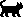
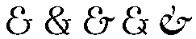
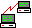

Kobol·o —
Esperantigita nomo de la programada lingvo COBOL.
Angle:
COBOL
Ruse: Кобол
1996-02-29
Angle: code
Ruse: кодировать;
программировать
1996-02-29
Aparata aŭ programa rimedo por transformi datumojn en kodon (vd Pri la kodoj matematike).
Angle: coder
Germane: Kodierer, Kodiereinrichtung
Ruse:
шифратор
1996-02-29
Programisto faranta komputopretajn programojn laŭ detala priskribo de ties algoritmo (teĥnika projekto). Kp kodi, realigo; kodumulo.
Angle: coder
Ruse:
программист
1997-01-06
Universala maniero prezenti informon por registrado, transmeto aŭ prilaboro, respektivo inter mesaĝeroj (elementoj de mesaĝo) kaj signaloj, per kiuj la mesaĝeroj estas registrataj. Kodo servas por prezenti diskretajn datumojn en komunikaj lineoj kaj kanaloj, aŭtomatoj, komputiloj.

Rim. Iuj permesas al si la licencon uzi la terminon «kodo» kaj por la respektivo, kaj por kodaĵo, kaj por kodono. Ĉar en iam tio estas maloportuna, oni provas elturniĝi per «kodigo» (encoding). Tio estas nelogika kaj evitinda (ĉar -igo implicas agon kaj ne konvenas por nomi statikan rilaton).
Ankaŭ vd ISO-kodo, Latina-3a, Unikodo.
Angle: code, coded character set
Ruse: код
(2) kod·o —
Angle: code
Ruse: код; машинный язык;
машинная программа
1996-02-29
Tiu parto de tradukilo, kiu produktas sekvencon de maŝinaj komandoj respondaj al tradukata programo.
Angle: code generator
France: générateur de code
Germane: Kodegenerator
Ruse: генератор
команд, кодогенератор
1996-02-29
Sekvenco da kodantaj signoj prezentanta kodatan datumeron (vd Pri la kodoj matematike); ekz-e, ĉe transmeto de teksto en Askio, la litero A estas prezentata per duuma kodono 2u01000001 (t.e. 16u41).
Tradiciaj kodonoj estas unubajtaj signonumeroj; tamen nun, fine de la 20a jc (2000-09-28) tio jam ŝajnas iom arkaika; vd longa kodono.
Noto. La vorto estas elektita pro interfaka unuecigo kun la proksimsenca termino genetika [SPIV]:
kodon·o  Unuo de la genetika kodo de la kromosoma DNA (desoksiribonukleata acido).Ankaŭ la kalembura misanalizo «kod/ono» estas nemalplaĉa.
Angle: code element, code point, code position, bit combination
France: codet
Ruse: кодон, кодовая
комбинация
1996-02-29
Maniero plukodi datumon, koditan per iu kodo, uzante alian kodon, pli konvenan por datumtransmeto aŭ alia celo. Rezulte la datumo estas kodita per kompono de kodoj. Ekz-e oni ofte uzas UTF-8 por transmeti aŭ konservi tekstojn koditajn en Unikodo.
Angle: character encoding scheme, encoding, content transfer encoding
1998-08-19
Vektoro el 256 kodonoj, difinanta subsignaron sufiĉan por bezonoj de aplikaĵo (ekz-e por homa lingvo aŭ grupo da lingvoj).
En Unikso kodpaĝo kutime apartenas al la serio de okbitaj ISO-kodoj (ISO-8859-*).
Jen kelkaj kodpaĝoj, disponeblaj en Vindozo:
Rim. Iam oni kontrastigas signaron (= kodata aro) kaj kodpaĝon (= kodo).
Angle: code page, code set, coded
character set
Ruse: кодовая страница
1997-01-24
«Fiulo kiu provas ŝteli programojn aŭ pasvortojn» [Jel]. Kp retpirato.
Angle: cracker
France: craqueur, déplombeur, pirate
Hispane: intruso
Ruse: взломщик
1996-02-29
Fako de komunikteorio, matematika studo de kodoj celanta adapti ilin al la bezonoj de komuniksistemoj, pligrandigi ties rendimenton kaj fidindon.
Angle: coding theory
Ruse: теория
кодирования
1996-02-29
Trakti (esplori, modifi ktp) pecojn de maŝinkodo per metodoj ne tute rutinaj aŭ regulaj.
Angle: hack
1996-02-29
Ulo kapabla kaj ema kodumi. Kp artifikulo.
Angle: hacker
France: fana, mordu de l'ordinateur
Ruse: хакер
1996-02-29
Uzanta en ĉiuj lokoj de komplika strukturo (ekz-e datumbazo, plurmodula programo) datumojn apartenantajn al unu sama versio.
Angle: consistent
Ruse: целостный,
согласованный
1996-02-29
Tia disa tradukado de pluraj programmoduloj kun komunaj deklaroj, ke ĉiuj tradukataj tekstoj uzas unu saman version de la deklaroj.
Angle: consistent compilation
Ruse:
согласованная трансляция
1996-02-29
Okbita norma kodo, uzata en la ekssovetiaj Uniksa mondo kaj Interreto.
Angle: KOI-8
Ruse: КОИ-8 (Код Обмена
Информацией, 8-разрядный)
1996-10-09
 Bildigo de teksto per
sensencaj signoj aŭ grizaj makuloj, ekz-e por superflugi la aranĝon de teksto kies signoj
estas tro malgrandaj por la uzata distingivo; kp volapukaĵo.
Bildigo de teksto per
sensencaj signoj aŭ grizaj makuloj, ekz-e por superflugi la aranĝon de teksto kies signoj
estas tro malgrandaj por la uzata distingivo; kp volapukaĵo.
Angle: greeking
Ruse: кракозябры, китайская грамота
2000-05-30
Sistema aranĝo de koloroj en cirklo, sur kies cirkonferenco je egala distanco situas tri punktoj, farbitaj per la bazaj koloroj; la ceteraj punktoj de la cirklo havas la koloron, rezultantan el miksado de la bazaj, inverse proporcie al la distanco ĝis la bazkoloraj punktoj. En la centro de la cirklo situas la blanko.
Kutime 0°=ruĝo, 120°=verdo, 240°=bluo. Vd unupolusa kolorspaco, dupolusa kolorspaco.
Angle: color gamut, color wheel
France: gamme de couleur
Germane: Farbenskreis, Farbenstern
Ruse:
цветовой круг
1997-07-22
 Estu G
nedirekta unugrafeo senmaŝa. G estas
k-disfarbebla, se ekzistas tia malkompono de ĝiaj verticoj en k disajn arojn
Estu G
nedirekta unugrafeo senmaŝa. G estas
k-disfarbebla, se ekzistas tia malkompono de ĝiaj verticoj en k disajn arojn
F₁, F₂, …, Fk;
V = F₁∪F₂∪…∪Fk;
Fi ∩ Fj = ∅
ke en ĉiu Fi neniaj du verticoj estas najbaraj (t.e. najbaraj verticoj nepre apartenas al malsamaj aroj); tiam la supra malkompono estas nomata k-kolorizo de G. Tiujn terminojn inspiris la problemo pri kvar farboj, en kiu la verticoj de ĉiu aro havas unu saman koloron, kaj la ekstremoj de ĉiu eĝo estas diverskoloraj. La malpleja nombro n de aroj en diversaj kolorizoj de grafeo G estas kolornombro de G, kaj G estas nomata n-kolora. En multaj aplikoj specialan rolon havas dukoloraj grafeoj.
Angle:
chromatic number
Ruse: хроматическое число
1996-02-29
Estas pluraj modeloj pri la fenomeno koloro; ĉiuj prezentas ĝin 3-dimensie. En la teĥniko plej gravas la «kuba» RVB-modelo. En la tradicia arto oni preferas unupolusan kolorspacon aŭ dupolusan kolorspacon, intuicie pli klarajn (prognozeblajn).
La nomojn de la koloroj plej ofte aperantaj sur la komputilaj ekranoj vd ĉe RVB.
Angle: color
France: couleur
Ruse: цвет
1997-07-22
Nombro de diversaj koloroj atribueblaj al rastrumero. Ju pli grandas la kolorozo kaj distingivo, des pli multe da videomemoro necesas.
Depende je tio, kiom da bitoj oni disponigas por prezenti koloron, oni povas havi
| bitoj | koloroj | normo aŭ aparato |
|---|---|---|
| 1 | 2 | unukolora (monochrome) |
| 2 | 4 | (CrummyGraphicsAdaptor) |
| 4 | 16 | EGA |
| 8 | 256 | VGA, SVGA ktp |
| 15 | 215 = 32768 | HiColor |
| 16 | 216 = 65535 | HiColor |
| 24 | pli ol 16e6 | TrueColor |
| 32 | multege da koloroj… | |
Angle: color depth
Ruse: цветность
2005-05-08
Ω Skripto, dosiero entenanta proceduron en laboradministra lingvo aŭ en la fontlingvo de aplika programo.
Angle: command file
France: fichier de commande
Germane: Kommandodatei
Ruse: командный
файл
1998-06-26
Ω En Uniksaj ŝeloj, esprimilo ebliganta enŝovi en komandon eligaĵon de alia komando; kutime tiun anstataŭigotan komandon oni markas per malapostrofoj; en pli moderna sintakso (ekz-e en Baŝo) oni povas uzi ankaŭ la formon $(komando), ekz-e
23$ echo la dosierujo $(pwd) entenas $(ls|wc -w) dosierojn la dosierujo /home/pok entenas 46 dosierojn
Angle:
command substitution
France: substitution de commande
Germane: Kommandoersetzung
2000-08-20
Angle: command line
Ruse: командная
строка
1996-02-29
Aro de ĉiuj komandoj kiujn povas plenumi komputilo, ofte aranĝita en tabelon kun indiko de la operandoj kaj kodaj konvencioj.
Angle: instruction set
France: jeu d'instructions
Germane: Befehlsvorrat, Befehlssatz
Ruse: набор
команд
1996-02-29
La tradicia stilo de komputil(eg)a arkitekturo en kiu por plialtigi la rendimenton kajaŭ la oportunon de «permana programado» estas realigitaj tre povumaj komandoj (ekz-e en la komputiloj DEC VAX). Kp komandeta arkitekturo.
Noto. Laŭ la angla CISC = Complex Instruction Set Computer oni povus fari Esperantan siglon KAK = Komplika Aro de Komandoj — kaj sekve, KAK-komputilo, KAK-arkitekturo ktp, kontraste al RAK.
Angle: CISC architecture
1996-02-29
Stilo de komputila arkitekturo per kiu oni celas atingi pli altan rendimenton per simpligo de la komputilaj komandoj.
Noto. Laŭ la angla RISC = Reduced Instruction Set Computer oni povus fari Esperantan siglon RAK = Reduktita Aro de Komandoj — kaj sekve, RAK-komputilo, RAK-arkitekturo ktp, kontraste al «KAK».
Angle: RISC architecture
1996-02-29
Speco de homa-komputila interfaco per pure teksta enigo en la komanda linio.
Kutime la komandliniaj interfacoj disponigas ĉiujn eblojn de la programa produkto, kaj klavara enigo estas pli rapida kaj oportuna por la profesia uzulo. Male, GUI kutime disponigas nur kelkajn tipajn uzmanierojn, kaj elekteblajn per menuoj kaj dialogujoj — tio oportunas por novulo kaj incitas la spertulon.
Angle: command line interface
Ruse: работа в командной строке
1999-03-06
Parametro de programo indikita en komanda linio.
Angle: command line
parameter
Ruse: параметр командной строки
1996-02-29
Ordono por tuja plenumo (ekz-e per interpretilo), precipe:
Angle: instruction; command
Germane: Befehl
Ruse: команда
1996-02-29
Angle: instruction cycle
Ruse: командный
цикл, цикл команды
1996-02-29
La nombro de bitoj, necesaj por prezenti komandon, indiko de la kampoj (partoj), prezentantaj la operacikodon kaj la operandojn; la nombro de memoradresoj en la komando (en unu-, du-, tri-, sen-adresa komputilo).
Noto. La misuzo de formato anstataŭ formo ĉi-okaze ŝajnas evitinda.
Angle: instruction format
Ruse: формат
команды
1996-02-29
Reĝistro de la stirorgano, entenanta la adreson de la kuranta (aŭ de la tuj plenumota) komando.
Angle: instruction counter, program
counter, PC
Pole: licznik rozkazów
Ruse: счётчик
команд
1996-02-29
En kombinatoriko, «kombinaĵo de n elementoj
el m elementoj» estas aro de n elementoj elektitaj el
m-elementa aro; la nombro de tiaj aroj (la nombro de kombinaĵoj el
m po n) estas
(mn) = Kmⁿ = Aⁿm / Pn = m! / [n!⋅(m−n)!]
Ekz-e, el la kvar elementoj a, b, c, ĉ eblas fari ses kombinaĵojn po 2 elementoj: ab, ac, aĉ, bc, bĉ, cĉ; do, K42=6.
Rim. En la landoj latinidaj oni simboligas tiun nombron per C42; en la ĝermanaj, per (mn). Mi esperantigis la latinidan formon, kiu estas pli kutima por mi ☺ kaj kiu estas simetria kun la simboloj por la aliaj kombinatorikaĵoj (en la ĝermana sistemo ili ŝajnas manki).
Angle: combinations of
m objects taken n at a time
France: combinaisons de m objets pris à n
Germane: Kombinationen n-ter Klasse (aus m)
Ruse: сочетания из m по n
1996-08-31
Supernocio por aranĝaĵo, kombinaĵo, permutaĵo.
Angle: choice
France: groupement
Germane: Zusammenstellung
Ruse: соединение,
выборка
1996-08-31
Parto de la diskreta matematiko studanta problemojn pri
elektado kaj aranĝado de anoj de diskreta aro, grupo, grafeo, pri optima
pakado ktp. La klasikaj kaj elementaj nocioj de kombinatoriko estas aranĝaĵo, kombinaĵo, permutaĵo.
Angle: combinatorics,
combinatorial analysis
Germane: Kombinatorik
Ruse:
комбинаторика, комбинаторный анализ
1996-08-31
Valoro kiun variablo ricevas tuj post sia estiĝo aŭ en la prepara plenumfazo de struktura ordono (ekz-e de nombrila iteracio).
Angle: initial value
Germane: Anfangswert
Ruse: начальное
значение
1996-02-29
Struktura ordono, iteracio en kiu la ripetadon regas Bulea kondiĉo, testata antaŭ ĉiu ciklo (do, la korpo eble plenumiĝos neniomfoje). En Paskalo komenckondiĉa iteracio havas jenan sintakson:
komenckondiĉa_iteracio = "DUM" Bulea_esprimo "FARU" ordono.
Angle: WHILE-loop
Ruse: цикл с условием
продолжения
1996-02-29
Parto de la fontteksto de programo kiun la tradukilo preterpasas; kutime komento servas por dokumenti la programon por legantulo. Ankaŭ vd forkomenti, malkomenti.
Noto. PIV1 entenas pli mallongan neoficialan formon komenti, «komentario» estas Fundamenta. La formo «rimarko» laŭas la kutimon de la asemblaj lingvoj (ne estas logika kialo ilin distingi, tio estas nura tradicio).
Angle: comment
Ruse: комментарий
1996-09-22
La signo & (ĝi havas ankaŭ aliajn signobildojn: ) kies Askia kodono estas 38; internacie uzata por prezenti la vorton «kaj», ligaturo de Et (la Latina vorto por «kaj»).
Rim. En matematiko kaj en ALGOL-60 la Bulean kajon simbolas la «logika kajsigno» ∧.
Noto. Oni proponis ankaŭ la vorton perlueto [Pt]; verdire, nemultaj francaj komputikistoj scias la presistan vorton esperluette (probabla etimologio: «&, per lui et») kaj ĉiuj komprenas, kio estas la angla ampersand (&, per se “and”) aŭ «komerca kaj»; tial ajna el la du ŝajnas preferinda.
Angle: ampersand
France: esperluète, esperluette, perluète, sperluette
Germane: Et-Zeichen, kommerzielles Und, kaufmännisches Und
Ruse: коммерческое И, амперсэнд
1996-02-29
Komerce vendata programaro, kontraste al publikaĵo kaj propagaĵo.
Angle: commercial
software, payware
Ruse: коммерческий продукт
1996-02-29
Vd Askio, on-punkto, speciala signo, subkomo, superkomo.
Angle: comma
Pole: przecinek
Ruse: запятая
1996-02-29
Tia makulaturtraktado, ke post ĝia apliko la disponigebla memoro okupas unu koneksan memorareon (vd fragmentiĝo).
Angle: compacting
garbage collection
Ruse: чистка памяти с
уплотнением
1996-02-29
Rearanĝo de memoro (ĉefmemoro aŭ ekstera memoro) celanta kolekti la liberajn kaj la okupitajn memorblokojn en du koneksajn memorareojn, por forigi fragmentiĝon kaj tiel ebligi novajn memorhavigojn kajaŭ plirapidigi la memoratingon.
Angle: (memory, disk) compaction
1996-02-29
Operacio testanta, kiu rilato validas super ĝiaj argumentoj. Speciale, en multaj komputiloj estas komando por kompari du nombrojn, liveranta en aparta reĝistro trivaloran rezulton (−1, 0, aŭ +1, depende tion, ĉu la unua operando estas malplia, egala aŭ plia kompare kun la dua); la kuranta valoro de tiu komparreĝistro uzeblas por aranĝi kondiĉajn saltojn. En la programlingvoj la komparaj operacioj kutime havas la formon de rilataj operacioj.
Angle: comparison operation
Ruse:
операция сравнения
1996-02-29
Esprimo «kiu forme similas al egalaĵo, sed enhavas anstataŭ la = unu
el la komparaj signoj <, ≤, > aŭ ≥» [EKV].
Angle: inequality
Ruse: неравенство
1996-02-29
 kompiler·o [PIV1],
kompil(um)il·o [KKV, MMES] —
kompiler·o [PIV1],
kompil(um)il·o [KKV, MMES] — Angle: compiler
Ruse: транслятор; компилятор
1996-02-29
Maniero prezenti negativajn nombrojn per komplemento kaj redukti subtrahon al adicio. Vd laŭcifera komplemento, ĝisbaza komplemento (kaj pli speciale, komplemento ĝis du, komplemento ĝis naŭ, komplemento ĝis dek).
Angle:
complement representation
Ruse: представление в
дополнительном коде
1996-02-29
Arteoria
sinonimo por nego en Bulea algebro; rilate al universo U, por aro A⊆U la komplemento estas
Ā = { x : x∈U ∧ x∉A };
en Paskalo disponeblas ardiferenco.
 Laŭbita nego de bitĉeno (kiu fakte estas la komplemento ĝis du).
Pli
ĝenerale, ajna komplementa prezento de nombro.
Por subgrafeo G′, havanta la verticojn V′ kaj la eĝojn E′, de grafeo G kun la verticoj V kaj la
eĝoj E, komplemento estas la subgrafeo de G kun la
verticoj V kaj la eĝoj E∖E′.
Laŭbita nego de bitĉeno (kiu fakte estas la komplemento ĝis du).
Pli
ĝenerale, ajna komplementa prezento de nombro.
Por subgrafeo G′, havanta la verticojn V′ kaj la eĝojn E′, de grafeo G kun la verticoj V kaj la
eĝoj E, komplemento estas la subgrafeo de G kun la
verticoj V kaj la eĝoj E∖E′.
Angle: complement
Ruse: дополнение
1996-02-29
Ĝisbaza komplemento en la dekuma nombrosistemo. Ekz-e por 1987, la nombro 8013.
Angle: ten's complement
France: complément à dix
Germane: Zehnerkomplement
Ruse: дополнение
до десяти
1996-02-29
Ĝisbaza komplemento en la duuma nombrosistemo. Ĝi estas komplemento ĝis unu plus 1; la plej ofta maniero prezenti negativajn entjerojn en komputilo. Ekz-e (konsiderante unubajtan prezenton)
Angle: two's complement
Ruse:
(точное) двоичное дополнение
1996-02-29
Laŭcifera komplemento en la dekuma nombrosistemo. Ekz-e por 1987, la nombro 8012.
Angle: nine's complement
Ruse:
дополнение до девяти
1996-02-29
Laŭcifera komplemento en la duuma nombrosistemo, alivorte prezento de negativa duuma entjero per laŭbita nego de ĝia absoluta valoro.
Angle: one's
complement
Ruse: обратный код
1996-02-29
Tia grafeo, ke ĝi havas ĉiujn eĝojn, eblajn en la koncerna grafea klaso, por donita aro da verticoj; do, por n-grafeo tio signifas, ke ĉiu vertico estas incida al n maŝoj, kaj ke ĉiujn du verticojn ligas po n eĝoj; en kompleta senmaŝa 1-grafeo ĉiujn du verticojn ligas ĝuste po unu eĝo (ĉiuj verticoj estas najbaraj) ktp. Por la ĝenerala okazo, se mankas karakterizo de klaso, la nocio pri kompleta grafeo estas sensenca.
Angle: complete graph
Ruse: полный граф
1996-02-29
Senmemora cirkvito por kalkuli sumon de du bitoj havanta tri enirejojn (du adiciatoj kaj la malprunto el la ĵusantaŭa bitpozicio) kaj du elirejojn (la sumo kaj la malprunto).
Angle: full adder, three-input adder
France: additioneur complet
Ruse: полный
сумматор
1996-02-29
En Unikso ofte sufiĉas ke la uzulo tajpu nur komencon de iuj argumentoj (ekz-e dosiernomoj) aŭ komandoj, kaj la programo plenigas la reston, almenaŭ tiom, kiom ĝi povas determini el la tajpita parto; la uzulo povas tajpi iom pli kaj reapliki kompletigon (en Emakso kaj Baŝo kompletigon lanĉas tabo).
Angle: completion
Ĉeĥe: doplníní
Ruse: завершение
1999-03-21
Malfacileco de algoritme solvenda problemo, karakterizata per risurco(j), necesa(j) por la koncerna komputado. Estkiel risurcojn oni povas konsideri apartajn disponaĵojn, sed plej ofte temas pri la bezonataj memorkapacito (ĵargone «spaco») kajaŭ komputada tempo. Por iel unuecigi la mezurojn, oni kutimas konsideri komputadon per Turinga aŭtomato.
Angle: complexity
Ruse: сложность
(алгоритмов и вычислений)
1996-02-29
Studoj pri kompliko de diversaj algoritmoj. Kontraste al la ĝenerala teorio de komputeblo, kiu studas la komputadon plene abstraktante disde la kvantaj limigoj, komplikteorio interesiĝas ĝuste pli la kiomo de minimume sufiĉaj risurcoj.
Angle: complexity theory
Ruse: теория
сложности (алгоритмов и вычислений)
1996-02-29
Programada medio por krei aplikaĵojn el programaj komponantoj (Ĝavaj faboj, fenestraĵoj ktp). Ekz-e Visual Age, Delphi, Visual Basic, Mojo, PowerBuilder.
Angle: builder tool, application designer tool
2000-11-04
h(a)=c ⇔ g(f(a))=c
R|S = { 〈x,z〉 : (∃y)[R(x,y) ∧ S(y,z)] }
Angle: composition, superposition
Ruse:
суперпозиция
1996-02-29
La arto desegni bildojn, diagramojn ktp uzante elementojn de fiksita signaro, disponebla ĉe koncerna komputilo aŭ ties periferiaĵo; kp rastruma grafiko. Kutime la signaro de fikssignara ekrano aŭ printilo disponigas aron da signoj por komposta grafiko, kiuj servas por prezenti diversajn liniojn (dikajn kaj maldikajn, unuoblajn kaj duoblajn), angulojn, interkruciĝojn, eventuale ankaŭ arkojn (kvaroncirklojn) ktp. El tiaj geometriaj elementoj, disponeblaj en Lateĥo, estas kompostitaj ĉiuj figuroj en nia Leksikono. Ekstrema okazo de komposta grafiko estas «Askia grafiko» per la nuraj signoj de la 7-bita Askio (Komposta grafiko en Askio).
Angle: character graphics
Germane: Zeichengrafik, Pseudografik
Ruse:
наборная графика
1996-02-29
Nombri.
Noto. «Nombri» tute sufiĉas ankaŭ por kontinuaj grandoj: ja ne nur entjeroj, sed ankaŭ reeloj estas nombroj!
Angle: meter
Ruse: считать,
измерять
1996-02-29
Kombino de striktasenca komputilo, ĝiaj periferiaĵoj (la aparataro) unuflanke, kaj de «sistema» programaro aliflanke; = komputilo (larĝasence). Kp konfiguraĵo, platformo.
Angle: computer system
France: système à calculer [d'ordinateur]
Germane: Rechersystem, Computersystem
Ruse:
вычислительная система
1996-02-29
Angle: computing
France: calcul, computation; application d'ordinateur
Germane: Rechnen, Berechnung; Rechneranwendung
Ruse:
вычисление; вычислительное дело,
применение ВМ
1996-02-29
Aro por kiu ekzistas algoritmo, konstruanta (komputanta, listiganta,
eventuale kun ripetoj) ĉiujn ĝiajn elementojn; formale, rekursie generebla aro.
Angle: effectively computable set
Ruse:
вычислимое множество, эффективное
множество
1996-02-29
Funkcio f estas komputebla,
se ekzistas algoritmo kiu por ĉiu x
el ĝia domajno,
x∈dom f, komputas la valoron
f(x), kaj diverĝas se
x∉dom f; ekz-e f(x)=x² super
la pozitivaj entjeroj.
Oni proponis plurajn formaligojn de la nocioj algoritmo kaj komputebla funkcio (Turinga aŭtomato, reĝistra aŭtomato, rekursiaj funkcioj ktp); estas pruvite, ke ili ĉiuj ekvivalentas. Nun oni ĝenerale akceptas la hipotezon, ke la komputeblaj funkcioj ekvivalentas al ajna el tiaj klasoj (la Ĉurĉa tezo).
Angle: effectively
computable function
Ruse: вычислимая функция
1996-02-29
Baza
koncepto de la teoria komputoscienco, kiu temas pri la eblo solvi koncernan
problemon per algoritmo. Ekzistas matematike
rigoraj nocioj de komputebla funkcio kaj komputebla aro por ℕ; per aritmetikigo oni plivastigas la koncepton de
komputeblo al aliaj specoj de konstrueblaj objektoj. Inter aliaj,
komputebla reelo estas reelo por kiu ekzistas algoritmo ebliganta
kalkuli ĝiajn racion(al)ajn aproksimojn ĝis ajne malgranda ekarto. Similan
sencon havas la nocio «konstruebla reelo» en diversaj sistemoj de konstruiva matematiko.
Parolante pri problemoj, ecoj aŭ aroj, oni ofte volas ne konstrui objekton, sed ricevi respondon en la duvalora logiko, «ĉu jes aŭ ne?». Tia pli postulema aliro rezultigas pli magran klason de objektoj; en tiaj okazoj anstataŭ paroli pri komputeblo oni uzu la terminon (kaj nocion) decideblo (solveblo). Ankoraŭ pli malvasta difino de «efektive» solveblaj problemoj estas la «realisma komputado» studata en komplikteorio.
Angle: effective computability
Germane: Berechenbarkeit
Ruse: эффективная
вычислимость
1996-02-29
Tuto de la risurcoj homaj, programaj kaj aparataj, sufiĉa por datumprilaboro bezonata de organizaĵo aŭ disponigata al eksteraj uzantoj.
Angle: computing centre, computer
center
Ruse: вычислительный центр
1996-02-29
Solvi matematikan problemon aŭ prilabori datumon aplikante algoritmon, precipe en formo de programo: komputi paskodatojn laŭ Viktorio.
Noto.
Angle: compute
Ruse:
вычислить
1996-02-29
Vd komputoscienco.
1996-02-29
Simbola komputado, speco de simboltraktado realiganta algebrajn manipuladojn, kiaj
Angle: algebraic symbol
manipulation
Ruse: символьные вычисления
1996-02-29
Ĝenerala priskribo de komputilo per abstrakta strukturo nedependa je aparata realigo: per fiksita komandaro kaj la manieroj de informoprezento (la ekstera komputila arkitekturo), per interrilatoj de la organoj (la busoj, la memorhierarkio, la reĝistroj, procesoroj — la interna komputila arkitekturo). La IBM-a Sistemo/360, aperinta en 1964, estis la unua arkitekturhava komputilo: tiu komputila arkitekturo estis plu uzata en 1991; IBM konstruis multe da komputiloj diversmaniere realigantajn ĝin aŭ ĝiajn plivastigojn. Iam certaj komandoj estis realigitaj aparate, iam per mikroprogramoj. Nuntempe SPARC estas bona ekzemplo de komputila arkitekturo realigata de diversaj firmaoj per tute malsimila aparataro. Vd komandeta arkitekturo, komandega arkitekturo.
Angle: computer architecture
Ruse:
архитектура ВМ
1996-02-29
La aro da scioj kaj rutinoj necesa por ĉiutaga apliko de komputiloj en la profesiaj kaj privataj agadoj.
Angle: computer literacy
France: connaissances en informatique
Germane: Computeralphabetismus
Ruse:
компьютерная грамотность
1996-02-29
 Aranĝo de la komunika kaj komuta aparataro, protokoloj kaj programaro, kiuj arigas plurajn (aŭ eĉ multajn) komputilojn en tutecan komputan sistemon.
Vd reto, loka reto, malloka reto, interreto, intrareto, eksterreto, subreto; sakreto, spino, transita reto.
Angle: computer network
France: réseau d'ordinateurs
Germane: Rechnernetz
Ruse: сеть ВМ,
вычислительная сеть
1996-10-15
Dimensie kajaŭ komputive granda komputilo, kutime ne destinita por individua aŭ tre speciala uzo (kontraste al persona komputilo aŭ mikroprocesoro).
Rim. Kp ĉefkomputilo, gastiga komputilo.
Angle: mainframe
France: gros ordinateur, macroordinateur, superordinateur
Germane: Großrechner, Großrechenanlage
Ruse:
большая ВМ
1996-02-29
Apliko de komputiloj por ĉiaflanka direktado de teĥnikaj kaj administraj aspektoj de industria produktado. Vd ekz-e komputilizita projektado, cifereca stirado.
Angle: CAM,
computer-aided manufacturing
France: fabrication assistée par ordinateur, système de FAO
Germane: rechnerunterstütztes Fertigen, rechnergestützte
Fertigung; CAM-System
Ruse: автоматизированная
система управления призводством, АСУП;
автоматизированное производство
1996-02-29
Apliko de komputiloj en la lernoprocezo. La komputilo uzeblas je ajna punkto de tia procezo por kontroli la sciojn de la lernantoj, por pli aŭ malpli rapida prezentado de la lernomaterialo (depende je la individua progreso de la lernanto) kaj por detala registrado kaj dokumentado de la lernoprocezo, kio povas helpi la instruiston.
Lit. Lerni aŭ ne lerni? Perkomputila Instruado // Internacia Komputado. 1985. N-ro 6(2).
Angle: computer-aided learning (CAL),
computer-assisted instruction (CAI)
France: enseignement assisté par ordinateur
Ruse:
автоматизированное обучение, машинное
обучение
1996-02-29
Kolekto de rimedoj kaj metodoj, subtenantaj «inĝenieradan manieron» krei kaj evoluigi programaron je ĉiuj stadioj de la laboro, dum la tuta vivciklo de programaro. La «inĝenierada maniero» ĉi tie signifas klare difinitan, agorditan kaj ripeteblan agadon surbaze de ĝenerale akceptitaj informoprezentoj, projektada disciplino kaj KPI-rimedoj.
Angle: computer-aided
software engineering, CASE
Germane: rechnergestützte Softwareentwicklung; rechnergestützte
Programmentwicklung
Ruse: автоматизированная
разработка программного обеспечения
1996-02-29
Apliko de komputiloj por projekti teĥnikajn produktojn; ekz-e interaga preparado de grafikaĵoj kaj skemoj (grafiko), modelado de la projektata objekto kaj dokumentado. Vd komputilizita programar-inĝenierado.
Angle: computer-aided design, CAD
France: ingénierie assistée par l'ordinateur, I.A.O.
Germane: rechnergestütztes Entwerfen; rechnergestützter Entwurf
Ruse: автоматизированное
проектирование
1996-02-29
Programrimedoj kiuj ne dependas je specialaj ecoj de komputilo kaj taŭgas por diversaj komputiloj kaj platformoj.
Angle: machine-independent
France: indépendant machine
Germane: rechnerunabhängig
Ruse:
машинно-независимый
1996-02-29
Aŭtomata rimedo por prilabori datumojn per operacioj indikataj per programo. Kp kalkulilo.
Angle: computer
Ĉeĥe: poĉítaĉ
France: ordinateur
Germane: Computer, Rechner
Ruse: ВМ, компьютер
Serba-Kroate: raĉunar
1996-02-29
Komputile stirata servo, disponiganta al la rajtigitaj uzantoj rimedojn por registri, transmeti kaj ricevi mesaĝojn kadre de komputila reto. Vd aboni.
Angle: e-mail, electronic mail
France: messagerie électronique, mél
Ruse:
электронная почта
1996-02-29
Kapablo de
komputa sistemo (ekz-e aŭtomato) trakti
pli-malpli larĝan klason da problemoj (ekz-e «Turinga aŭtomato estas pli komputiva ol
finia aŭtomato»).
Kapablo
de komputilo fari difinitan kvanton da komputado en difinita tempo (ofte
esprimata per la nombro de operacioj
plenumeblaj dum 1 sekundo).
Angle: computer power, computing power
France: productivité d'ordinateur
Germane: Rechnerleistung
Ruse:
производительность ВМ
1996-02-29
Ĝenerala nomo por grupo da fakoj dediĉitaj al studo de diversaj aspektoj de apliko kaj konstruado de komputiloj: programado, nombra matematiko, teorio de algoritmoj, programlingvoj kaj operaciumoj, artefarita intelekto, komputilaj arkitekturoj.
Rim. Iam oni kontrastigas angle computing science (aŭ theoretical computer science, t.e. «teoria komputoscienco») kaj computer science («teĥnika komputoscienco» aŭ «komputiliko»).
Noto. Kp informatiko, komputiko.
Angle: computer science
Germane: Informatik
Ruse: информатика
2003-06-02
En deklaro de Paskala rikordotipo, la parto de kamplisto komuna al ĉiuj okazoj (varioj), kontraste al la laŭokaza parto.
Angle: fixed part
Ruse: общая часть
1996-02-29
a∩b = { x : (x∈a) ∧ (x∈b) }
En Paskalo, A*B.
Angle: intersection
Ruse: пересечение
1996-02-29
En grafeo, vertico
a komunikiĝas kun vertico b, simbole a⇝b, se en
la grafeo estas vojo de a ĝis b.
Por sendirekta grafeo la komunikiĝo
estas ekvivalentorilato. Vd koneksa grafeo, koneksa komponanto.
Noto. Pri la vorto «komunikiĝantaj», kp la PIV1-an komunikiĝantaj vazoj.
Angle: connected vertices
Ruse: связанные
вершины
1996-02-29
Sistemo en kiu datumfonto (la sendilo) povas fidinde transmeti datumojn en la celpunkton (al la ricevilo). Komuniksistemo enhavanta plurajn fontojn kaj celpunktojn formas komunikreton. Komuniksistemoj estas studobjekto en la Ŝanona komunikmodelo.
Angle: communication system
Ruse: система
связи
1996-02-29
Studo de la komuniksistemoj per matematikaj modeloj de ilia funkciado. Oni povas apartigi informteorion (la konceptoj pri informokiomo, datumfonto, datumtransmetaj kanaloj, entropio) — kaj kodteorion.
Angle: communication theory
France: théorie de communication
Germane: Kommunikationstheorie
Ruse: теория
связи
1996-02-29
Angle: commutative
Ruse: перестановочный,
коммутативный
1996-02-29
Ω En pluroperaciuma komputilo, startiga programo ebliganta elekti dum praŝargo la uzotan operaciumon; ekz-e LILO en la Linuksaj distribuaĵoj.
Angle: dual boot
Ruse: программа двойной загрузки
2001-04-12
La eco de matrico esti
pli aŭ malpli bonkondiĉa (aŭ miskondiĉa), esprimata per kondiĉnombro.
Angle: conditionedness
Ruse: обусловленность
1998-08-14
Por matrico A, la produto de la normoj de A kaj A⁻¹,
esprimanta la kondiĉkvaliton de A.
Angle: condition number
Ruse: число
обусловленности
1998-08-14
Bulea esprimo, je kies valoro dependas (ne)plenumo de iuj agoj, precipe en seo kaj iteracio. Vd sorbema operacio.
Angle:
condition
Ruse: условие
1996-02-29
Sendirekta grafeo en kiu ĉiuj verticoj estas komunikiĝantaj verticoj. Kp koneksega grafeo, konekseta grafeo.
Angle: connected graph
France: graphe connexe
Ruse: связный граф
1996-02-29
En sendirekta grafeo,
ĉiu maksimuma subgrafeo kies verticoaro
estas ekvivalentoklaso rilate al la komunikiĝo (vd komunikiĝantaj verticoj). Simile
difineblas koneksega komponanto por direkta grafeo. Koneksega grafeo havas ĝuste unu koneksegan komponanton.
Rim. Oni povas facile adapti la algoritmon por larĝiĝema trairo aŭ tiun por profundiĝema trairo tiel, ke ili liveros la nombron de koneksaj komponantoj en sendirekta unugrafeo.
Angle: connected component
Ruse: связная компонента
1996-02-29
Parto de memoro konsistanta el najbaraj elementoj (ekz-e, aro da tujsekvaj blokoj sur disko).
Angle: contiguous area
Ruse: связная
область памяти
1996-02-29
Direkta grafeo en kiu ĉiuj du verticoj a kaj b estas ambaŭdirekte komunikiĝantaj verticoj, t.e. (a⇝b) ∧ (b⇝a). Kp konekseta grafeo.
Angle: strongly
connected graph
Ruse: сильно связный граф
1996-02-29
Direkta grafeo kiu iĝas koneksa grafeo post anstataŭigo de ĉiu direkta eĝo per samekstrema simetria.
Angle: weakly connected graph
Ruse: слабо
связный граф
1996-02-29
Angle: connector
Ruse: разъём,
соединитель
1998-08-13
Angle: on-line
France: mode connecté
Ruse: подключённый,
оперативный
1997-06-11
Baza atingomaniero per modemo, ebliganta estigi provizoran komunikadon kun provizanto de retkonekto per telefona voko. Kp permanenta konekto.
Angle: dial-up account
France: compte d'accès par ligne commutée
Germane: Wählanschluß, Wählverbindung
Ruse:
коммутируемое соединение
1996-02-29
Kombino de la organoj de komputa sistemo kaj de la konektaĵoj inter ili, motivita de iliaj bazaj teĥnikaj parametroj kaj de la apartaĵoj de la koncernaj aplikoj.
Angle: configuration
Ruse: конфигурация
1996-02-29
En la ISO-a etendaĵo de Pascal, rimedo ebliganta specifi formalan parametron tia tabelo, ke la respondaj faktaj parametroj rajtos havi diversan longon. La specifo de konformiva tabelo entenas difinajn aperojn de nomoj por simboligi la limojn de ĉiu dimensio; tiuj nomoj uzeblas en la procedurkorpo kiel nurlegeblaj variabloj (ekzemplo: Duoniga serĉo en Paskalo).
Angle: conformant array, conformant-array parameter
1996-02-29
En la ISO-a etendaĵo de Pascal, rimedo por specifi konformivan tabelon en variabloparametra specifo aŭ en valorparametra specifo de formalparametra listo:
konformiva_tabelskemo =
"TABELO" "[" indictipa_specifo{";" indictipa_specifo "]"}
"EL" (tipnomo | konformiva_tabelskemo) |
"PAKITA" "TABELO" "[" indictipa_specifo "]" "EL" tipnomo.
indictipa_specifo = limnomo ".." limnomo ":" tipnomo.
limnomo = nomo. Angle: conformant-array schema
1996-02-29
(Kongruaj entjeroj) Vd ĉe modulo.
Angle: congruent
Ruse: равный по модулю
Angle: compatible
Ruse: совместимый
1996-02-29
Pri komputila familio ebliganta aplikon de programoj kaj datumaroj ĉe la pli malnovaj aŭ malpli komputivaj anoj de la familio.
Angle: downward compatible
Ruse: совместимый вниз
1996-02-29
Pri programo verkita por malnova aŭ malpli komputiva tipo de komputilo kaj ne uzanta rimedojn, mankantajn en la pli novaj aŭ pli povumaj komputiloj; en komputila familio, la eblo ruli per pli nova aŭ pli komputiva maŝino la programojn verkitajn por maŝino malnova.
Angle: forward compatible, upward compatible
Ruse: совместимый вверх
1996-02-29
(Pri signoĉeno en tekstoprilaboro, formulo en logika derivado ktp) Esti konforma al komparokriterio (regulesprimo, ŝablono ktp); esti akceptita de serĉa, analiza aŭ kontrola traktilo.
Angle: match
France: concorder
Germane: entsprechen
Ruse: сопоставиться,
отождествиться, совпасть
1998-03-07
= kajo.
Rim. La Fundamenta senco de «konjunkcio» estas la gramatika, kaj tiu senco estas konsiderinde pli vasta ol la matematika (aperinta en PIV2; PIV1 ĝin ne konis): ekz-e ankaŭ aŭ estas «konjunkcio» (en la senco gramatika) — sed ĝi estas alia Bulea operacio en la senco matematika. Fakte la du «konjunkcio»jn interrilatigas eksteresperanta etimologio, kaj ilia homonimeco estas pli ĝena ol la homonimeco de «kajo» fervoja kun «kajo» Bulea, kiujn konfuzi maleblas. La eblo derivi «kajo»n el la Fundamenta «kaj» estas tute regula kaj logike neriproĉebla; dum atribui al «konjunkcio» sencon de specife tiu Bulea operacio eblas nur per kontrabando de senco alilingva — el la propra sistemo de Esperanto ĝi ne deriveblas.
2005-05-25
«Fina sekvo de rezono» [PIV1]. Vd elimplikaciigo, implikacio; premiso; konsekvenco.
Angle: conclusion
Ruse: заключение
1996-02-29
La dua
parto de implikacio. Kp konkludo.
Angle: consequent
Ruse:
консеквент
1996-02-29
En dialogo, skribi ŝanĝitan datumaron en dosieron en ekstera memoro.
Rim. Iuj malvolas uzi konservi kaj preferas tute
maltaŭgan sekurigi, «ĉar la ofta kurtaĵo estas Stir-S».
Tamen tio estas perfido kontraŭ Esperanto kaj kapitulaco antaŭ la angla;
cetere, tute nenecesa, ĉar eĉ tiun S eblas trovi en
Konservu (la anglalingvaj GUI-oj ja
uzas simile Format/File, Send/Save ktp).
«Sekurigi» estus taŭga traduko por tute alia afero (write protect).
Angle: save
France: enregistrer, sauvegarder
Ruse:
записать, сохранить, запомнить
1998-08-01
Aplika sistemo de artefarita intelekto, kiu entenas sciobazon (aron de interrilataj reguloj, formale prezentantaj la sperton de specialistoj el iu aplikkampo), faktobazon (datumoj koncernantaj la konsideratan problemon) kaj derivmotoron (derivilon), ebligantan surbaze de la reguloj, faktobazo kaj de la faktoj liverataj de la uzulo rekoni la situacion, diagnozi aŭ rekomendi celkonforman agon.
Noto. La vorton eksperto PIV1 malrekomendas.
Angle: expert system
Pole: system doradczy
Ruse: экспертная
система
1996-02-29
En Paskalo, rezervita vortosimbolo servanta por malfermi sekcion de konstantodeklaroj.
Angle: CONST
1996-02-29
Angle: read-only memory
Germane: Festwertspeicher
Ruse: постоянная
память, ПЗУ
1996-02-29
Esprimaĵo kies valoro ne ŝanĝiĝas dum ajna programrulo. En Paskalo,
konstanto = [signumo] (sensignuma_nombro|nomo) | signoĉeno.
Kp nomhava konstanto, literalo.
Angle: constant
Ruse: постоянная величина, константа
1996-02-29
Speco de deklaro, kiu enkondukas nomon estkiel sinonimon por konstanto. En Paskalo konstantoj povas aperi komence de bloko, arigite en apartan sekcion:
konstantodeklaro = nomo "=" konstanto.
Angle:
constant definition
Ruse: определение
константы
1996-02-29
Angle: constructor
Ruse: конструктор
1997-06-03
Scienco pri abstraktaj konstruaj procezoj, pri la intelekta
kapablo ilin realigi kaj pri iliaj rezultoj, la konstrueblaj
objektoj. La «abstrakteco» de la konstruaj procezoj koncernas du
konceptojn:
Konstruan procezon, rezultigantan objekton egalan al A, oni rigardas konstruado de la objekto A. La asertoj, esprimantaj la intelektan kapablon realigi konstruajn procezojn, en konstruiva matematiko ofte havas la formon de teoremo pri ekzisto de objekto posedanta koncernan econ. Tio implicas, ke tia objekto estas potenciale realigebla, ke oni posedas metodon por ĝin konstrui. Tiu koncepto esence diferencas disde la konceptoj de la arteoria matematiko, kaj necesigas kreon de aparta konstruiva logiko.
Konstruiva matematiko aplikas la konceptojn de komputeblo kaj algoritmo, ekz-e por difini reelojn kaj la bazajn nociojn de analitiko.
Angle:
constructible mathematics, constructive mathematics
Ruse:
конструктивная математика
1996-02-29
Ĉia risurco aŭ materialo, kiu estas uzebla en komputado nur unufoje aŭ plurfoje, ekz-e papero, inkrubando, farbopulvoro, trukarto ktp.
Angle: consumable resource
Ruse: расходный материал
1996-02-29
En operaciumo, maniero aranĝi interfacon en komputila reto laŭ la Uniksa ĉefeniguja-ĉefeliguja modelo. La biblioteka
proceduro socket el sys/socket.h kreas
kontaktoskatolon (ekstremaĵon de komunika kanalo) kaj liveras dosiernumeron por ĝin atingi. Esence ĝin
karakterizas pordo kaj retnoda adreso. La kutimaj
programoj por reta komunikado: telnet, rlogin, ftp, talk k.a. bezonas
kontaktoskatolojn. Vd Unix-socket-faq for network programming.
Angle: socket
Ruse: гнездо, розетка
1998-08-18
Ω En komputa sistemo, datumo indikanta kiujn risurcojn (kaj po kiom da ili) rajtas uzi koncerna uzanto aŭ uzantogrupo. Konton eblas indiki per uzantonumero aŭ per salutnomo.
Angle: account
France: compte
Germane: Konto
Ruse: бюджет, учётная
запись пользователя
1996-09-23
Komputilizita sistemo por enigo, konservado, prilaboro, transmeto kaj printado de datumoj en oficeja administrado. Tipaj komponantoj de kontorvaro estas datumbazo, teksta redaktilo kajaŭ sistemoj de surtabla tipografio kaj grafiko, komputila reto ktp.
Angle: office automation system
France: système bureautique
Ruse:
конторская система
1996-02-29
Estu kvadrata matrico A havanta la ordon n kaj entjero 2≤k≤2×n;
tiam la elementoj A[i,j] por kiuj i+j = k formas
kontraŭdiagonalon. Oni povas distingi la ĉefan (k = n+1) kaj
kromajn kontraŭdiagonalojn, analogie al ĉefdiagonalo kaj kromdiagonaloj.
Angle:
antidiagonal, secondary diagonal
Ruse: побочная
диагональ
1998-08-16
Rimedo por malebligi kontraŭleĝan kopiadon de programaro.
Angle: copy protection
Ruse: защита от копирования
1996-10-22
Neŭtriganto en adicia grupo; la kontraŭon de a
simbolas −a; kp inversa
elemento, signumŝanĝo.
Noto. Kp en PIV1: «la kontraŭa antaŭsigno» (t.e. «la kontraŭa signumo»); «la kontraŭa nombro» [Leb88].
Angle: opposite value
Ruse: противоположный элемент
1996-02-29
Matrico egala al kontraŭo de sia transponaĵo: M = −MT
(do, en ĝia ĉefdiagonalo estas 0-oj).
Angle: skew-symmetric matrix, antisymmetric matrix
Ruse:
кососимметрическая матрица
1998-08-18
Rimedo por sekurigi datumojn sur datumportilo (precipe, magneta disko), kiu malebligas registradon sur la datumportilon sed ne malebligas legi la registraĵojn.
Angle: write protection
Ruse:
защита от записи
1996-10-22
Redunda(j) bito(j) de mesaĝo (vorto, bajto) kiu(j) estas funkcio de la informbitoj kaj servas por malkovri erarojn ĉe registrado, konservado aŭ transmeto de datumo — ekz-e parecbito.
Noto. Kp stirbito.
Angle: check bit
Germane: Prüfbit
France: bit de contrôle
Ruse: контрольный
разряд
1996-02-29
(Apliko de la) rimedoj por testi, ĉu sistemo, ties organo(j) aŭ la traktata datumo konformas al la specifoj, kaj okaze de malregulaĵo, por serĉi ties kaŭzon.
Noto. «Kontroli neniam havas la anglan sencon: direkti, regi» [PIV1]. Kp stiri (sed ankaŭ atingokontrolo).
Angle: check,
diagnostics
Ruse: контроль
1996-02-29
Speciale markita loko en programo, kie necesas savi la datumojn por ebligi restartigon de la plenumo ekde la tie atingita stato, aŭ kiu estas registrenda dum spurado (vd spuri).
Noto. Kp apoga punkto.
Angle: checkpoint
France: point de reprise, point de contrôle
Germane: Prüfpunkt, Testpunkt, Fixpunkt
Ruse:
контрольная точка
(2) kontrol·punkt·o —
Speciale indikita loko en programo, kie ĝia plenumo interrompiĝas kaj la stiradon ricevas la erarserĉilo.
Angle: breakpoint,
watchpoint
Ruse: контрольная точка, точка
прерывания
1996-02-29
Tia interna prezento de tiparo,
ke ĉiu signobildo estas difinita per aro da
kurboj, formantaj ĝian konturon. Por bildigo
de kontura tiparo necesas speciala programo, rastrumigilo. Ekz-e
![[Rastrumigo]](BILDOJ/rasteriz.gif)
La konturaj tiparoj pli konvenas por aŭtomata skalado (ŝanĝo de la tipara grado) ol la rastrumaj tiparoj (kvankam tio postulas konsiderindan nombran komputadon). La plej ofte uzataj normoj por prezenti konturajn tiparojn estas TTF kaj Type-1.
Angle: outline font
Ruse: контурный шрифт
1996-02-29
Algoritmo konverĝas super donita
valoro x, se la aŭtomato ĝin
plenumanta, ricevinte tiun x-on estkiel donaĵon, finas sian laboron
kaj liveras rezulton; tiam oni ankaŭ diras, ke
la funkcio, kiun la algoritmo komputas, estas
difinita por x; simbole f(x)↓ aŭ
x∈dom f. Kp diverĝi, domajno.
Noto. PIV1 registras ankaŭ aliajn matematikajn signifojn de la termino.
Angle: converge
Ruse: сходиться
1996-02-29
Tia transformado de datumo, ke ĝi konservas la sencon de la prezentata informo; ekz-e, transskribo per alia kodo, ŝanĝo de nombroprezento aŭ de registrumo; vd tipkonverto, ciferecigilo, signumpluigo.
Angle: conversion
Ruse: преобразование
1996-02-29
Angle: console
Ruse: пульт; консоль
1998-07-20
Skribi, sendi datumon al la valorizato (la celo) sen ŝanĝi la datumprezenton (sen konverto) kaj sen ŝanĝi la fonton (kp movi, permuto, valorizo).
Angle: copy
Ruse: копировать
1996-02-29
En dialoga redaktilo, kopii apartigitan areon («eltondaĵon») de teksto aŭ bildo en la redaktilan poŝon sen ŝanĝi la originalon, por poste elpoŝigi la kopiitan pecon aliloke.
Kp transpoŝigi, enpoŝigi, movi en la poŝon.
Angle: copy
Ruse: забрать в карман
1996-02-29
Rezulto de kopiado (vd kopii), la nova stato de la celmemoro.
Angle: copy
Ruse: копия
1996-02-29
Interna parto de frazo, subprogramo aŭ sendaĵo, entenanta la mesaĝon aŭ la priskribon de la fakte plenumendaj agoj (korpo de iteracio, proceduro, makroodifino, modulo). Kp ĉapo.
Angle: body
Ruse: тело
Ringo R tia, ke R∖{ 0 } formas
grupon rilate al sia multiplika operacio. Ekz-e vd
Bulea algebro. Kp kampo.
Angle: division ring, quasifield,
skew field
Ruse: тело
1996-02-29
Da kilooperacioj sekunde.
1996-02-29